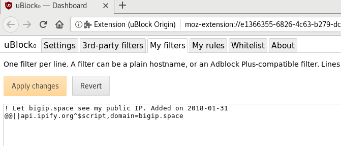

1. Open your uBlock settings panel and go to the My filters tab.
2. Enter the following filter (or similar, as you see fit):
! Let bigip.space see my public IP. Added on 2018-01-31
@@||api.ipify.org^$script,domain=bigip.space
This lets only this domain access the ipify.org script needed to grab your public IP address. The line with the ! is a comment.
Here's what it looks like:
